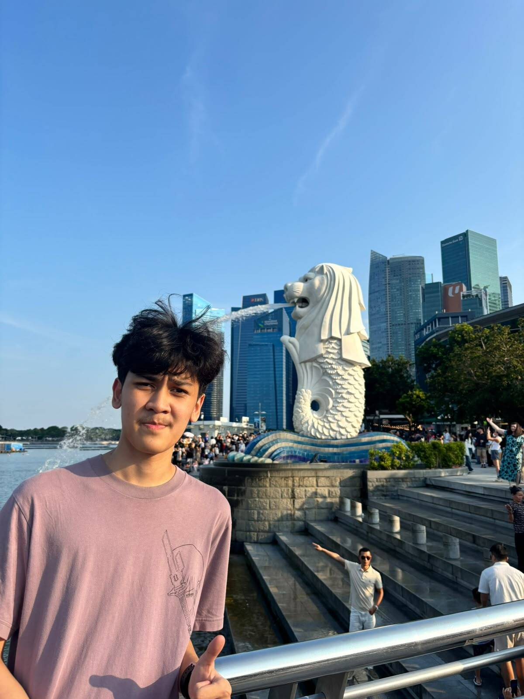

An Informatics Engineering student at ITS who is eager to learn new things, especially in technology and organizational activities. Although I am still developing my organizational experience, I am open to learning, adapting, and working with others as part of a team. I am responsible, willing to help, and always interested in gaining new knowledge and experiences. I aim to continuously develop my skills while making meaningful contributions to the campus community through organizational involvement.
Documented school visits through photography and videography, presented ITS and its academic opportunities to high school students, created promotional content to increase awareness of ILITS x IMAJAS 2026, and assisted in supervising ILITS tryouts at SMA Angkasa 1.
Undergraduate student in Informatics Engineering focusing on technology, computing, database management with MySQL, and contributing actively to campus community activities.
Completed high school with an active interest in technology, storyboarding, multimedia, and collaborative teamwork.
Watching movies and playing games during my leisure time, exploring compelling narratives and interactive experiences.
Constantly learning new things, picking up fresh skills, and exploring emerging technologies.